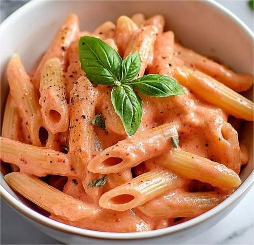
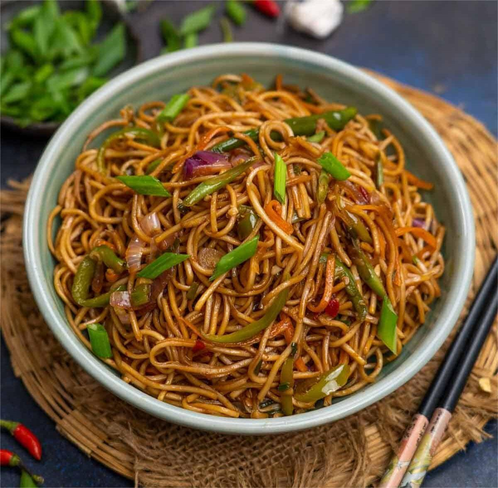
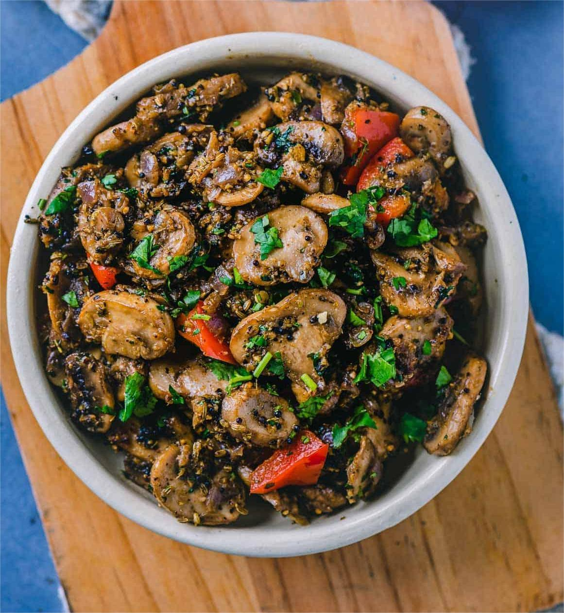
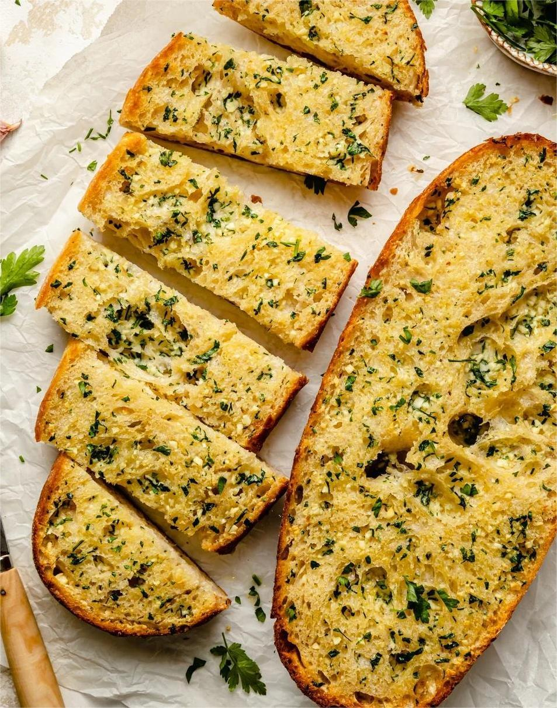
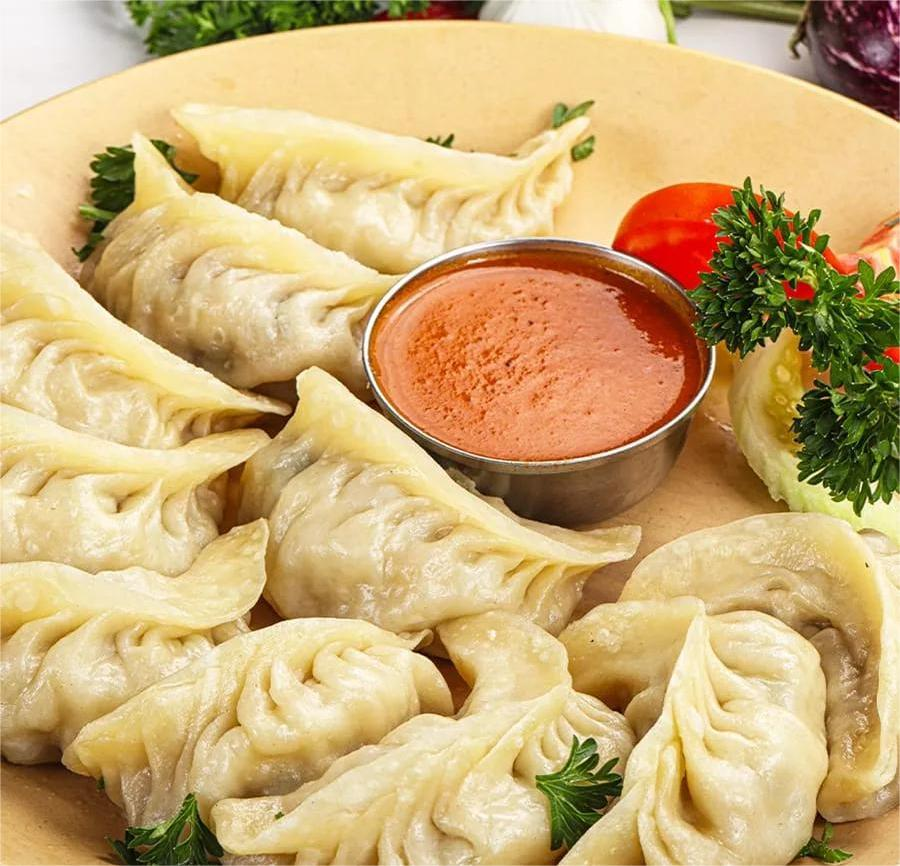
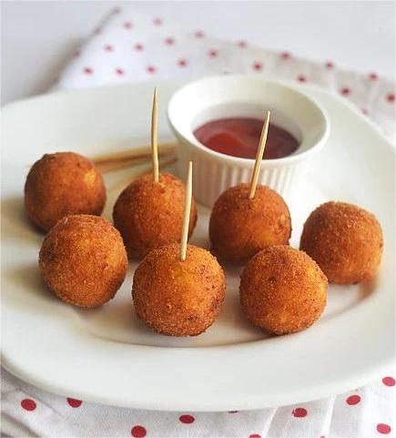

Pink Sauce Pasta
Creamy fusion pasta made with tomato and cream sauce.
Benefit: Comfort food with quick energy.
Ingredients
- Pasta – 1 cup
- Tomato puree – ½ cup
- Fresh cream – ¼ cup
- Garlic – 2 cloves
- Butter & olive oil
- Salt, pepper, chili flakes
Method
- Boil pasta until al dente and drain.
- Sauté garlic in butter and olive oil.
- Add tomato puree and cook till thick.
- Add cream, spices, and pasta.
- Toss well and serve hot.

Burnt Garlic Noodles
Indo-Chinese noodles with bold garlic flavor.
Benefit: Instant energy & appetite booster.
Ingredients
- Noodles – 1 pack
- Garlic – 8 cloves (chopped)
- Chili flakes
- Soy sauce
- Oil & salt
Method
- Boil noodles and drain.
- Heat oil and burn garlic lightly.
- Add chili flakes and sauces.
- Add noodles and toss well.
- Serve immediately.

Mushroom Pepper Fry
Spicy aromatic mushroom stir fry.
Benefit: High protein & immunity support.
Ingredients
- Mushrooms – 200g
- Crushed pepper – 1 tsp
- Garlic & onion
- Oil & salt
Method
- Sauté onion and garlic.
- Add mushrooms and cook till dry.
- Add pepper and salt.
- Cook till golden.

Garlic Bread
Buttery toasted bread with herbs.
Benefit: Comfort snack.
Ingredients
- Bread slices
- Butter
- Garlic
- Mixed herbs
Method
- Mix butter with garlic and herbs.
- Spread on bread.
- Toast until golden.

Veg Momos
Steamed dumplings stuffed with veggies.
Benefit: Light and filling.
Ingredients
- Momo wrappers
- Cabbage & carrot
- Garlic
- Salt & pepper
Method
- Mix veggies and spices.
- Fill wrappers and shape.
- Steam for 10 minutes.

Cheese Corn Balls
Crispy outside, cheesy inside.
Benefit: Party favorite.
Ingredients
- Boiled corn
- Cheese cubes
- Bread crumbs
- Oil
Method
- Mash corn and add cheese.
- Shape balls and coat with crumbs.
- Deep fry till golden.